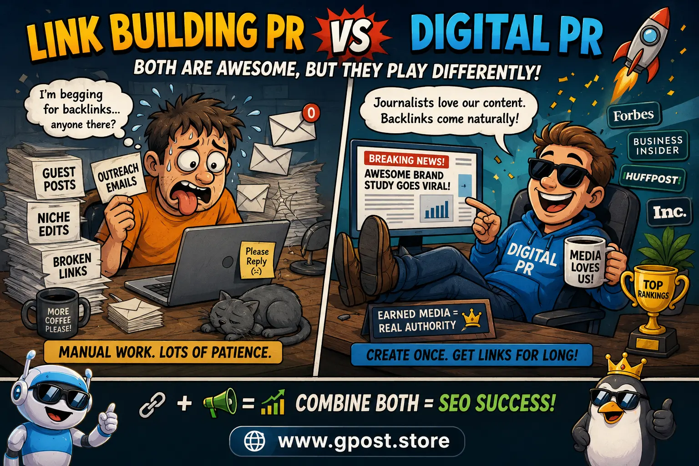
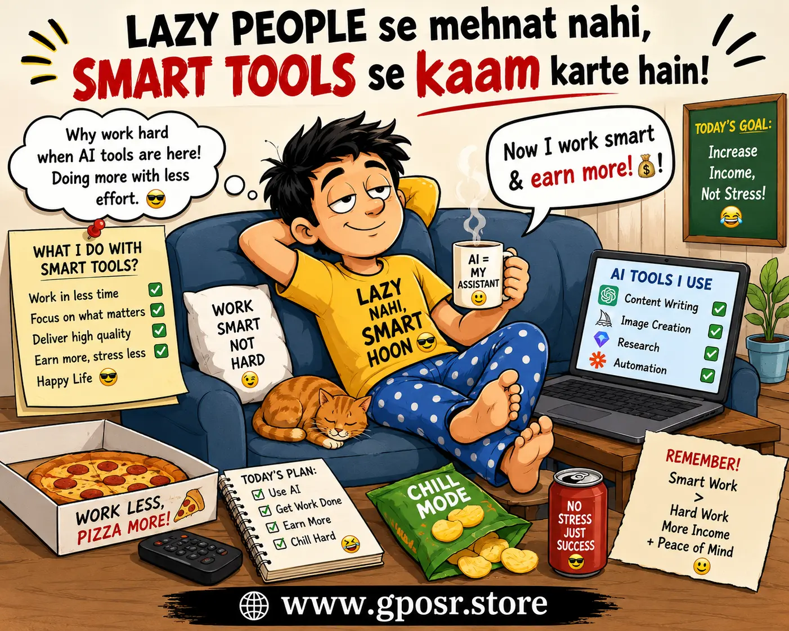
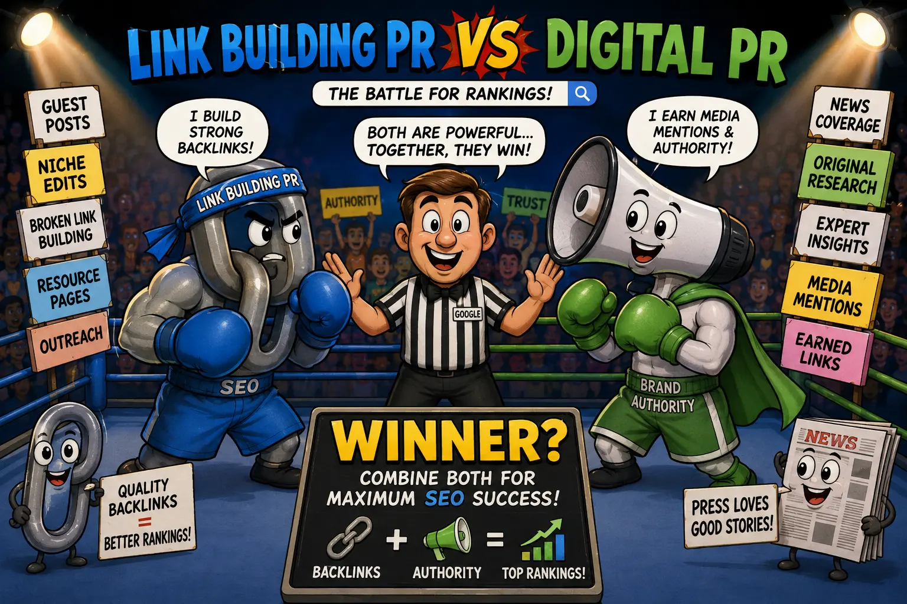
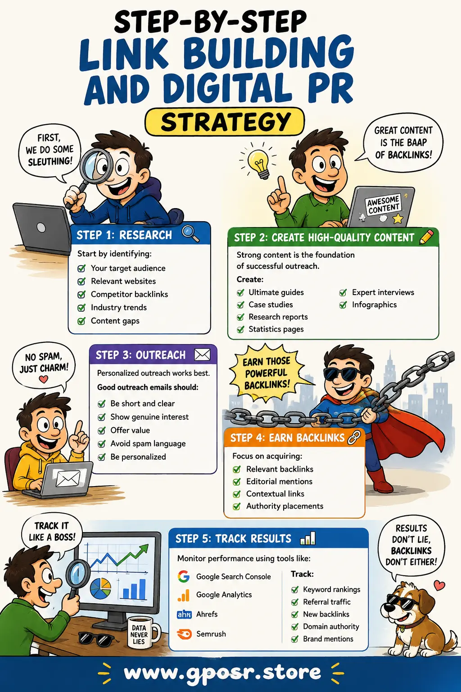

Link building pr vs digital pr: Complete SEO Guide for Better Rankings in 2026
Link building pr vs digital pr is one of the most discussed topics in modern SEO because both strategies help websites increase authority, earn backlinks, improve search rankings, and grow online visibility. Many business owners, bloggers, affiliate marketers, SaaS companies, and ecommerce brands struggle to understand which strategy works better and how they should use them together.
Traditional link building focuses mainly on acquiring backlinks from websites through outreach, guest blogging, niche edits, and relationship building. Digital PR, on the other hand, focuses on creating newsworthy content and earning editorial mentions from journalists, bloggers, magazines, and media publications.
In 2026, Google has become smarter than ever. Search engines now analyze trust signals, brand authority, contextual relevance, and natural mentions more deeply. That means SEO is no longer just about getting random backlinks. Websites now need authority, credibility, and genuine online recognition.
This detailed guide explains everything you need to know about Link building pr vs digital pr, including how both strategies work, their differences, SEO benefits, common mistakes, outreach strategies, and whether digital PR improves SEO more effectively than traditional link building.

Understanding the difference between link building and digital PR for SEO success
What Is Link building pr vs digital pr?
Link building pr vs digital pr refers to the comparison between traditional SEO link acquisition strategies and modern digital public relations methods that focus on authority, earned media, and editorial backlinks.
Both strategies help websites improve rankings, but their approach and long-term impact are different.
What Is Traditional Link Building?
Traditional link building is the process of getting backlinks from other websites to improve search engine rankings.
Common link building methods include:
- Guest blogging
- Niche edits
- Broken link building
- Resource page outreach
- Directory submissions
- Blogger outreach
- Forum links
- HARO outreach
The main goal is usually to increase domain authority and keyword rankings through backlinks. Many marketers also combine these strategies with Guest Post Link Building campaigns to build contextual authority from relevant niche websites.
What Is Digital PR?
Digital PR combines public relations with SEO. Instead of directly asking for backlinks, digital PR campaigns create content that journalists and publishers naturally want to mention.
Examples include:
- Original research studies
- Industry surveys
- Expert commentary
- Trending news stories
- Interactive tools
- Data-driven content
- Viral campaigns
Digital PR often earns high-authority editorial backlinks from trusted publications.
Why Link building pr vs digital pr Matters for SEO
Backlinks Remain a Core Ranking Signal
Even in 2026, backlinks remain one of Google’s strongest ranking factors. Quality backlinks help search engines understand:
- Website authority
- Content trustworthiness
- Industry relevance
- Topical expertise
- Brand popularity
Without backlinks, ranking for competitive keywords becomes extremely difficult.
Digital PR Builds Authority Beyond SEO
Traditional link building usually focuses only on rankings, while digital PR builds:
- Brand awareness
- Trust signals
- Media mentions
- Referral traffic
- Social proof
- Industry authority
This is why many marketers ask: does digital pr improve seo?
The answer is yes. Digital PR improves SEO both directly and indirectly by helping websites earn trusted editorial links and stronger brand signals.
Google Rewards Natural Mentions
Google increasingly values naturally earned mentions and contextual editorial backlinks. Websites that gain recognition through authority content often perform better long term than websites using aggressive backlink manipulation.

Digital PR campaigns can improve authority, trust, and organic traffic
White Hat Link Building vs Digital PR
What Is White Hat Link Building?
White hat link building follows Google guidelines and focuses on ethical strategies that provide genuine value.
Examples include:
- Quality guest posting
- Expert interviews
- Resource page outreach
- Relevant niche edits
- Broken link replacement
- Relationship outreach
White hat SEO focuses on sustainable long-term growth.
Difference Between White Hat Link Building vs Digital PR
There are several key differences between white hat link building vs digital pr.
- Traditional link building focuses mainly on backlinks
- Digital PR focuses on branding and authority
- Link building targets webmasters and bloggers
- Digital PR targets journalists and media publishers
- Digital PR campaigns often require stronger content assets
- Traditional outreach is easier for small businesses
Which Strategy Is Better?
Both strategies are powerful when used correctly.
Traditional link building works well for:
- Small businesses
- Affiliate sites
- Local SEO
- Niche websites
- New blogs
Digital PR works best for:
- SaaS brands
- Large companies
- Authority websites
- National brands
- Data-driven businesses
The best SEO strategy often combines both methods.
Earned Media vs Link Building
The debate around earned media vs link building is becoming more important because Google values trust and authority signals more than ever.
What Is Earned Media?
Earned media refers to publicity gained naturally through quality content, newsworthiness, or brand reputation.
Examples include:
- News mentions
- Magazine features
- Podcast interviews
- Social media shares
- Industry coverage
- Journalist citations
How Earned Media Differs from Link Building
Traditional link building is proactive outreach for backlinks. Earned media happens when people voluntarily mention your brand because your content is valuable.
Earned media usually leads to:
- More natural backlinks
- Higher trust
- Better engagement
- Increased authority
- Brand credibility
However, earned media is harder to scale consistently.
Digital PR vs Blogger Outreach
What Is Blogger Outreach?
Blogger outreach is a traditional link building strategy where marketers contact bloggers for collaborations, guest posts, product mentions, or backlink opportunities.
Many SEO agencies now use Blogger Outreach White Label Service in 2026 solutions to scale outreach campaigns while maintaining niche relevance and editorial quality.
How Digital PR Differs
Digital PR vs blogger outreach mainly differs in authority level and audience scale.
- Blogger outreach targets niche site owners
- Digital PR targets media publications
- Blogger outreach is relationship-focused
- Digital PR is story-focused
- Blogger outreach usually gains contextual backlinks
- Digital PR gains editorial mentions
Which One Is Safer?
Both can be safe if done naturally.
Problems happen when marketers:
- Buy spam links
- Use irrelevant websites
- Over-optimize anchor text
- Publish low-quality guest posts
- Use automated outreach spam
Quality always matters more than quantity.

Blogger outreach and digital PR both help build backlinks and authority
Types of Link Building Strategies
Guest Blogging
Guest blogging remains one of the most effective white hat SEO strategies when done on relevant websites.
Benefits include:
- Relevant backlinks
- Referral traffic
- Brand exposure
- Relationship building
Businesses looking for scalable outreach often rely on High Authority Guest Posts to improve rankings, trust signals, and long-term organic visibility.
Niche Edits
Niche edits involve placing backlinks into existing articles on authoritative websites.
This strategy works well because aged pages often already have authority.
Broken Link Building
Broken link building involves finding dead links on websites and suggesting your content as a replacement.
This method provides value to webmasters while earning backlinks naturally.
Digital PR Campaigns
Examples of digital PR campaigns include:
- Original studies
- Industry statistics
- Interactive calculators
- Infographics
- Viral content
- Expert commentary
How to Find Link Building and Digital PR Opportunities
Use Google Search Operators
Google search operators help find outreach opportunities quickly.
Examples:
- "write for us" + SEO
- "guest post" + marketing
- "submit article" + business
- "recommended resources" + SEO
Analyze Competitor Backlinks
Use tools like:
- Ahrefs
- Semrush
- Moz
- Majestic
Analyze competitor backlinks to discover:
- Guest blogging opportunities
- Niche edits
- Media mentions
- Resource pages
Build Relationships
Long-term SEO success depends heavily on relationships.
Connect with:
- Bloggers
- Editors
- Journalists
- Industry experts
- Podcast hosts
Step-by-Step Link Building and Digital PR Strategy
Step 1: Research
Start by identifying:
- Your target audience
- Relevant websites
- Competitor backlinks
- Industry trends
- Content gaps
Step 2: Create High-Quality Content
Strong content is the foundation of successful outreach.
Create:
- Ultimate guides
- Case studies
- Research reports
- Statistics pages
- Expert interviews
- Infographics
Step 3: Outreach
Personalized outreach works best.
Good outreach emails should:
- Be short and clear
- Show genuine interest
- Offer value
- Avoid spam language
- Be personalized
Step 4: Earn Backlinks
Focus on acquiring:
- Relevant backlinks
- Editorial mentions
- Contextual links
- Authority placements
Step 5: Track Results
Monitor performance using tools like:
- Google Search Console
- Google Analytics
- Ahrefs
- Semrush
Track:
- Keyword rankings
- Referral traffic
- New backlinks
- Domain authority
- Brand mentions

A proper SEO outreach process improves backlink quality and authority
Common Mistakes to Avoid
Buying Spam Backlinks
Cheap backlink packages usually create low-quality links that can harm rankings.
Ignoring Relevance
A relevant backlink from a niche website is often more powerful than an irrelevant high-authority link.
Over-Optimized Anchor Text
Using exact match keywords repeatedly can trigger Google spam signals.
Use a natural mix of:
- Branded anchors
- Naked URLs
- Generic anchors
- Partial match anchors
Mass Outreach Spam
Sending thousands of generic outreach emails damages relationships and reduces response rates.
Pro SEO Tips for Better Results
Focus on Niche Relevance
Topical relevance matters more than raw domain metrics.
Improve Internal Linking
Internal links help distribute authority across your website.
Create Linkable Assets
Content naturally attracts backlinks when it provides unique value.
Examples include:
- Statistics pages
- Original research
- Free tools
- Industry reports
- Visual assets
Combine SEO and Branding
The strongest SEO campaigns combine:
- Traditional link building
- Digital PR
- Content marketing
- Brand authority
Does Digital PR Improve SEO?
Yes, digital PR improves SEO significantly when executed properly.
Benefits include:
- High-authority backlinks
- Brand mentions
- Natural anchor diversity
- Increased trust signals
- Improved topical authority
- Referral traffic
Google increasingly rewards websites with strong authority and brand recognition.
Is Link building pr vs digital pr Still Worth It in 2026?
Absolutely.
Both strategies remain essential for competitive SEO.
However, modern SEO now focuses more on:
- Quality over quantity
- Authority over manipulation
- Relevance over volume
- Brand trust over shortcuts
Businesses that combine digital PR with white hat SEO often achieve stronger long-term results.
When Should You Avoid Aggressive Link Building?
Avoid risky link building when:
- Websites are irrelevant
- Links are obviously paid spam
- Anchor text is over-optimized
- Automation replaces quality outreach
- Content lacks value
Google penalties can severely damage organic traffic.
FAQs
1. What is guest posting?
Guest posting is the process of publishing content on another website to gain exposure, authority, referral traffic, and backlinks.
2. Is digital PR safe for SEO?
Yes. Digital PR is considered one of the safest SEO strategies because it focuses on natural editorial mentions and quality content.
3. How much does link building cost?
Costs vary depending on website authority, outreach quality, content creation, and campaign scale. Quality outreach usually costs more than spammy backlink packages.
4. How can I find websites for outreach?
You can use Google search operators, competitor backlink analysis tools, social media research, and SEO platforms like Ahrefs or Semrush.
5. Does link building still work in 2026?
Yes. Link building remains a major ranking factor, especially when backlinks are relevant, natural, and authoritative.
Conclusion
Link building pr vs digital pr is not about choosing one strategy over the other. The best SEO campaigns combine both approaches to build authority, trust, rankings, and long-term visibility.
Traditional link building remains valuable for acquiring relevant backlinks and improving keyword rankings. Digital PR expands that strategy by earning editorial mentions, building brand recognition, and creating stronger trust signals.
In modern SEO, businesses that focus on quality content, niche relevance, natural outreach, and authority building consistently outperform competitors relying on spam tactics.
If you want sustainable SEO growth in 2026, focus on:
- White hat SEO practices
- Authority-driven outreach
- Natural backlinks
- High-quality content
- Brand credibility
To learn more about advanced outreach and SEO strategies, explore professional guest posting services for authority backlink growth and scalable SEO campaigns.